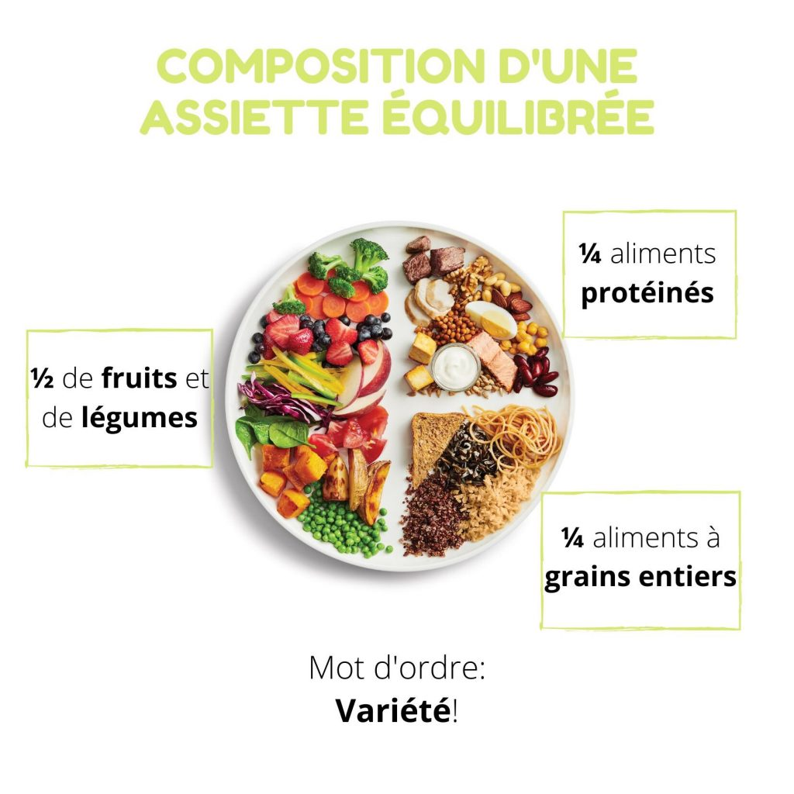
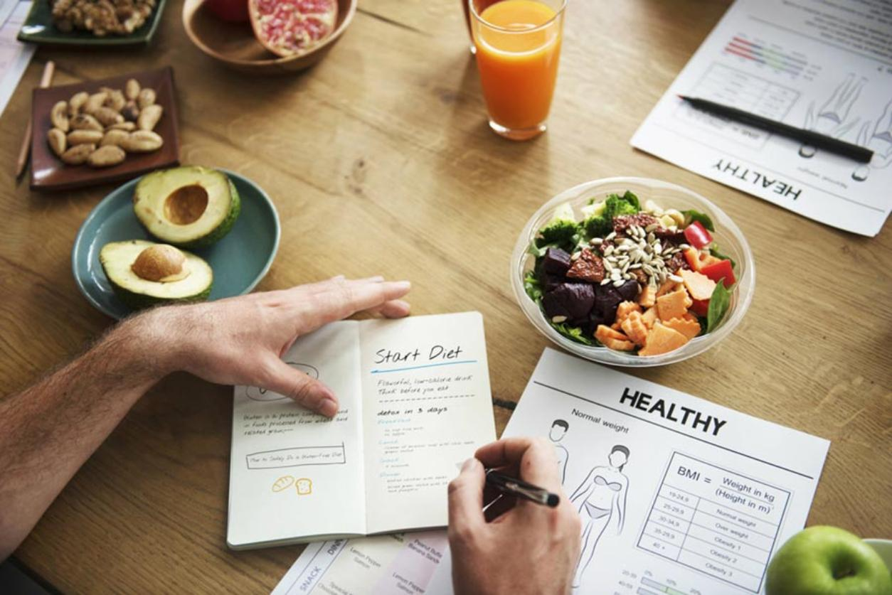

Que ton aliment soit ta seule médecine
Hippocrate-5ème siècle avant JC

MON APPROCHE UNE APPROCHE A LA FOIS NUTRITIONNELLE ET COMPORTEMENTALE
Je suis passionnée par mon métier par la nutrition la diététique et par ce lien si particulier que nous entretenons avec ce que nous mangeons. Parce qu'il n'est pas toujours simple de trouver le juste équilibre entre nos besoins physiologiques et ce que nous apporte notre alimentation.…. parce que d'autres paramètres tels que l'envie, le plaisir, la convivialité ou encore la peur de mal faire ou la culpabilité entrent en ligne de compte...
Mon approche est à la fois nutritionnelle et comportementale. Vous êtes unique, avec votre propre métabolisme et vos besoins spécifiques. Sur le plan diététique, les programmes alimentaires que je mets en place sont personnalisés, adaptés à votre situation et vos objectifs et apportent à votre organisme les nutriments les vitamines et les minéraux dont il a besoin.
Sur le plan comportemental, manger représente bien davantage qu'une simple réponse à la faim. Pour certains, il s'agit d'apaiser le stress, pour d'autres, de comblerl'ennui. Les émotions positives ou négatives régissent notre quotidien et induisent parfois des comportements qui ne permettent pas de rester assidu à une ligne de conduite alimentaire. Accepter vos émotions, déculpabiliser certains de vos comportements, certains aliments, retrouver vos sensations de faim, de satiété et apprendre à les gérer. Je vais vous y aider.
Je vous promets une écoute attentive pendant les consultations, mon soutien et ma disponibilité, mon énergie, un accompagnement au plus près de ce que vous êtes pour atteindre les objectifs fixés, à votre rythme et sans jamais vous jugé.
MES CONSULTATIONS

Les consultations s'articulent autour des trois axes essentiels et complémentaires de cette prise en charge thérapeutique :
-
Diététique : « ce que l'on mange »
-
Comportemental :« Comment on mange »
-
Activité physique : « Ce que l'on dépense comme énergie»
Comment s'organisent mes consultations?
La première consultation est destinée à bien connaître les patients :
Leur mode de vie, les antécédents personnels et familiaux, l'histoire de leur poids, etc...
Réaliser un bilan clinique afin d'évaluer notamment les éventuels impacts métaboliques cliniques d'un événtuel surpoids.
A réaliser un bilan du Niveau d'Activité Physique notamment celle de la vie quotidienne identifier les anomalies du comportement alimentaire.
Elle se termine par la prescription :
D'une éventuelle enquete alimentaire élargie (mise en perspective des prises alimentaires mais aussi des activités physiques réalisées tout comme les modalités des prises alimentaires et leur contexte émotionnel).
D'un éventuel bilan biologique et/ouexamens complémentaires.
Les consultations de suivi font l'objet :
D'un debriefing de l'enquête alimentaire a réalisé avec la collaboration active du patient ainsi que des examens complémentaires
De la mise en place et du suivi d'un contrat thérapeutique personnalisé définissant de façon conjointe avec le patient des objectifs de progression en terme de mesures diététiques orientées sur un rééquilibrage alimentaire,d'activité physique et de comportement alimentaire.
L'ensemble des données communiquées sur ce site ne sont fournies qu'à titre informatif : elles ne peuvent en aucun cas se substituer à une consultation médicale